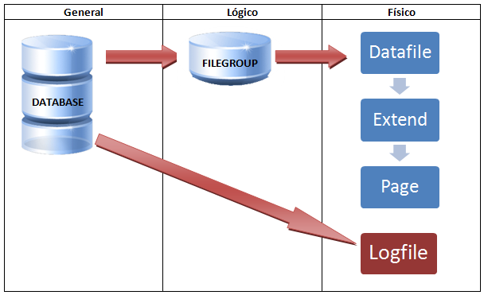

Motores de base de datos
¿Qué es un motor de bases de datos?
Noviembre 24, 2024 publicado por Ana María Zapata
El uso de herramientas tecnológicas para la gestión de datos estructurados y no estructurados es de vieja data, pero es en la actualidad donde se ha vuelto más popular y necesario. Los motores de bases de datos son herramientas que permiten la gestión integral de información y han demostrado alta efectividad a la hora de almacenar, recuperar y manipular grandes cantidades de datos.
En esta entrada, te explicaremos qué es un motor de bases de datos, sus características, tipología, arquitectura y algunos otros detalles relevantes.
Definición
Un motor de base de datos (DBMS Engine, por sus siglas en inglés) es el software encargado de almacenar, recuperar y gestionar datos en una base de datos. Proporciona una interfaz para interactuar con los datos a través de lenguajes de consulta, como SQL, y asegura la consistencia, integridad, disponibilidad y seguridad de la información.
Esencialmente, actúa como intermediario entre las aplicaciones y los datos almacenados, garantizando también la eficiencia en la gestión de información crítica para diversas aplicaciones empresariales y tecnológicas.
Características
Las características de un motor de bases de datos incluyen:
Soporte de transacciones: Garantiza que las operaciones sean atómicas y seguras.
Acceso concurrente: Permite que múltiples usuarios accedan simultáneamente a la base de datos.
Escalabilidad: Soporta crecimiento de datos y usuarios.
Integridad de datos: Asegura la exactitud y consistencia de los datos.
Alta disponibilidad: Minimiza el tiempo de inactividad.
Soporte de lenguajes de consulta: Como SQL o APIs especializadas.
Gestión de seguridad: Implementa permisos y autenticación para proteger los datos.
Clasificación
Los motores de base de datos se pueden clasificar según diferentes criterios:
- Por modelo de datos
Relacionales: Organizan datos en tablas relacionadas mediante claves (ej. MySQL, PostgreSQL).
No relacionales (NoSQL): Diseñados para estructuras de datos flexibles como documentos, grafos o columnas (ej. MongoDB, Cassandra).
- Por naturaleza de acceso
OLTP (Procesamiento de Transacciones en Línea): Optimizados para operaciones transaccionales rápidas (ej. Oracle DB).
OLAP (Procesamiento Analítico en Línea): Diseñados para análisis de datos a gran escala (ej. Amazon Redshift).
- Por el modelo de implementación
Locales: Corren en servidores dedicados.
Basados en la nube: Accesibles como servicios en la nube (ej. Firebase, Amazon Aurora).
- Por licencia
Comerciales: Software propietario (ej. Microsoft SQL Server).
De código abierto: Software libre (ej. MariaDB).
Tipología
Algunos tipos comunes de motores de base de datos incluyen:
Relacionales (RDBMS): Usan tablas para estructurar datos y definen relaciones entre estas tablas mediante claves primarias y foráneas. Algunos ejemplos son: MySQL, PostgreSQL, SQL Server.
Documentales: Almacenan datos en formatos como JSON o BSON. Por ejemplo: MongoDB, Couchbase.
Basados en grafos: Modelan relaciones complejas en grafos. Están optimizados para representar y analizar relaciones complejas entre entidades. Algunos jemplos de este tipo son: Neo4j, Amazon Neptune.
Claves-valor: Guardan pares clave-valor. Almacenan datos directamente en RAM para acceso rápido, siendo ideales para aplicaciones con altas demandas de rendimiento. Algunos ejemplos son: Redis, DynamoDB.
Columnares: Almacenan datos por columnas, lo que mejora el rendimiento en consultas analíticas. Ejemplos de este tipo son: Apache Cassandra, HBase.
Arquitectura
Un motor de base de datos suele estar constituido por los siguientes componentes:
Interfaz de usuario o API: Permite a los usuarios interactuar con la base de datos.
Procesador de consultas: Traducen consultas (como SQL) a operaciones entendibles por el sistema.
Gestor de almacenamiento: Controla cómo y dónde se almacenan los datos físicamente.
Gestión de transacciones: Asegura que las operaciones se realicen de forma consistente y cumpliendo con ACID (Atomicidad, Consistencia, Aislamiento, Durabilidad).
Gestión de memoria: Optimiza el acceso a datos en memoria y en disco.
La siguiente gráfica ilustra la arquitectura de un motor de base de datos genérico o agnóstico:
Según la entrada publicada por autor AKEIL RS (recuperado de la web en: "Curso de bases de datos \ arquitectura de un DBMS, accesible aquí ); un "DBMS" se puede dividir en tres niveles:
Nivel externo: Es el nivel del «SABD» (Sistema de ambiente de Bases de datos) más cercano al usuario por lo que se le conoce también como la vista del usuario. Este nivel define cómo el usuario ve a los datos almacenados por el «SABD».
Nivel conceptual: Es el nivel que define la base de datos tal como es y cómo la ve el DBA (DatabaseAdministrator). Este nivel define las relaciones entre los datos.
Nivel interno: Es el nivel que tiene que ver con el almacenamiento físico de los datos. Define cómo se guardan los datos en el medio físico.
Ventajas
Algunas de las diversas ventajas de utilizar un motor de base de datos incluyen:
Eficiencia en la gestión de datos: Facilita la manipulación y organización de grandes volúmenes de datos.
Automatización: Maneja tareas complejas, como la recuperación de datos en caso de fallos.
Interoperabilidad: Compatible con diversos sistemas y aplicaciones.
Optimización de consultas: Reduce el tiempo y los recursos necesarios para acceder a los datos.
Escalabilidad: Adecuado para aplicaciones pequeñas y grandes.
Limitaciones
Aunque la implementación de un motor de base de datos ofrece varias ventajas, también tiene algunas limitaciones entre las que se destacan:
Costo: Los motores comerciales pueden ser costosos.
Curva de aprendizaje: Configuración y mantenimiento pueden requerir experiencia técnica.
Compatibilidad: Algunos motores no son compatibles con ciertos lenguajes o plataformas.
Rendimiento: En bases de datos grandes, mal diseño o consultas no optimizadas pueden reducir el rendimiento.
Complejidad: Los sistemas distribuidos requieren un diseño más complejo (ej. bases de datos en clúster).
Fuentes consultadas
(incluye recursos de recuperación de imágenes)
- Tecnobits - ¿Qué es el motor de base de datos?
- Techedu - Motor de base de datos
- KeepCoding - ¿Qué son los motores de bases de datos?
- Porgramación Pro - Tipos de motores de bases de datos : Una guía completa
- Medium Multimedia - ¿Cúal es el motor de base de datos?
- Educa Sistemas - Arquitectura de un DBMS
Rebobinar entrada